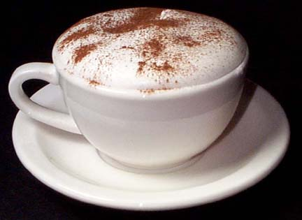

|
|
 | |
|
Café arábico com leite |
Cappucino |
Chá chai |
Mistura em casa |
O Café IFMS Amanda era uma jovem que adorava café. Ela sonhava em abrir uma cafeteria, um lugar onde as pessoas pudessem se reunir para conversar, ler, trabalhar ou simplesmente relaxar. Um dia, Amanda decidiu realizar seu sonho. Ela economizou dinheiro e comprou um terreno no centro da cidade. Com a ajuda de seus pais e amigos, ela construiu uma cafeteria simples, mas aconchegante. A cafeteria foi inaugurada no dia 22 de junho de 2023. Maria deu a ela o nome de "Café IFMS".
A cafeteria logo se tornou um lugar popular na cidade. As pessoas de todas as idades e classes sociais frequentavam a cafeteria para tomar café, conversar, ler ou simplesmente relaxar. Amanda era uma excelente anfitriã. Ela sempre estava disposta a conversar com os clientes e fazer com que se sentissem bem-vindos. Ela também era uma excelente barista. Ela sabia como preparar um café perfeito. A cafeteria da Amanda era um lugar especial. Era um lugar onde as pessoas podiam se sentir em casa, onde podiam relaxar e esquecer os problemas do dia a dia.
Amanda continuou trabalhando na cafeteria por muitos anos. Ela viu a cafeteria crescer e se tornar um marco da cidade. Ela também viu muitas pessoas se encontrarem e se apaixonarem na cafeteria. Amanda morreu em 2053, aos 80 anos. Seu legado continuou vivo no Café IFMS, que continua sendo um lugar popular, onde as pessoas se reúnem para conversar, ler, trabalhar ou simplesmente relaxar.